4.使用表和自定义视图¶
在上一章中，你做了大量的工作，使你的应用程序看起来和感觉像一个真正的Mac应用程序。现在，你将朝着不同的方向前进，看看显示数据和与用户互动的其他方法。
首先，你将学习如何使用SwiftUI新的Table视图，它只适用于macOS。你将添加到你的工具栏，并学习如何存储窗口的特定设置。
然后，你将深入研究日期选择器，并创建一个自定义视图，使你的用户能够选择不同的日期。在这一过程中，你将定制侧边栏，以允许在不同的日期之间进行交换。
为什么使用表格？¶
到目前为止，在这个应用程序中，你已经用卡片的网格显示了事件，这并没有什么不妥。但许多应用程序提供了查看数据的其他方式，以满足个人喜好、不同的屏幕尺寸或不同的使用情况。想一想Finder窗口。它有四个不同的视图选项，在不同的时间都很有用。
在2021年的WWDC上，苹果宣布了一个新的Table视图，只适用于macOS，所以现在你要在你的应用程序中提供这个视图选项。
很多数据集都是表格性质的，在表格中显示非常有效。你首先想到的可能是电子表格，但Finder中的文件列表或Music中的播放列表呢？SwiftUI一直提供列表，这就像单列表格。你可以通过在每行添加一个以上的视图来伪造一个多列的外观，但这并不能提供一个真正的表格所具有的所有功能。
现在，你可以在你的macOS SwiftUI应用中添加一个真正的表格。
添加一个表¶
打开你上一章的项目或者下载本章的材料，然后打开starter项目。
首先在项目导航器中选择Views组，并添加一个新的SwiftUI View文件，名为TableView.swift。
为了构建一个表格，你需要定义行和列。行是ContentView将传递给TableView的事件。在TableView的顶部添加这个声明：
var tableData: [Event]
这在TableView_Previews中产生了一个错误，所以将其previews的内容改为：
TableView(tableData: [Event.sampleEvent])
一个只有一行的表并没有什么意义，但你想在这里尽量减少对实时数据的使用。如果你从AppState的一个实例中提供预览数据，频繁的视图更新可能会超过API的数据使用限制。
现在你已经获得了定义行的数据，你可以设置列了。将body中默认的Text替换为：
// 1
Table(tableData) {
// 2
TableColumn("Year") {
// 3
Text($0.year)
}
// 4
TableColumn("Title") {
Text($0.text)
}
}
创建一个表不需要太多的代码：
- 用数据初始化一个
Table视图。这将迭代所有的事件，就像List所做的那样，每行有一个事件。 - 创建一个标签为
Year的TableColumn。 - 在这一列的每一行的单元格内，使用
Text视图来显示事件的year。 - 为
text建立第二列，名为Title。
恢复预览，打开Live Preview，并点击Bring Forward来查看你的单行表格：
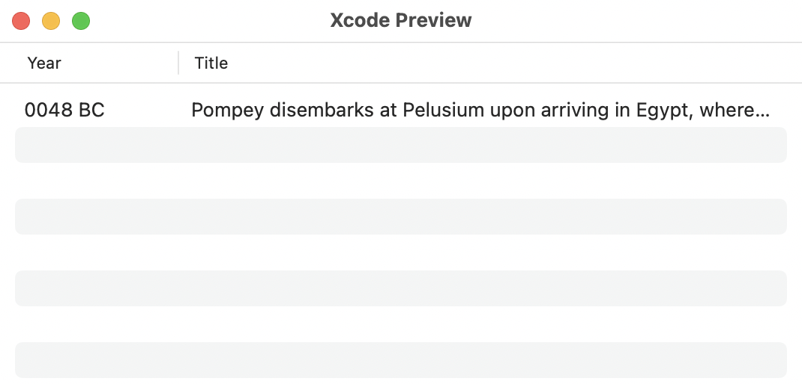
它看起来就像一个真正的Mac表格，有交替的行色、可调节的列宽和可点击的标题，但还有更多的功能可以添加。
大小和显示你的表格¶
拖动分栏器来调整栏宽，你会发现你可以使年份栏过小或过大。通过给第一列添加一个宽度修改器来解决这个问题：
.width(min: 50, ideal: 60, max: 100)
每行的高度是自动设置的，但你可以为任何一列的宽度设置限制。没有必要为最后一列设置任何宽度限制，因为它将占用所有的剩余空间。
你即将添加一种在网格和表格视图之间切换的方法，但现在，将应用程序设置为一直使用表格，这样你就可以看到它的运行情况。
切换到ContentView.swift，将NavigationView内的GridView行替换成这样：
TableView(tableData: events)
Note
如果你收到预览错误，或预览应用程序崩溃的报告，请删除ContentView_Previews。它造成了问题，因为它没有它的EnvironmentObject，但你不希望预览使用这个对象，因为它将达到API使用限制。所以删除整个预览结构。
现在构建并运行应用程序，以看到出现在你的表格中的实时数据。你可以在事件类型之间进行切换，并搜索表格，无需进一步编码。
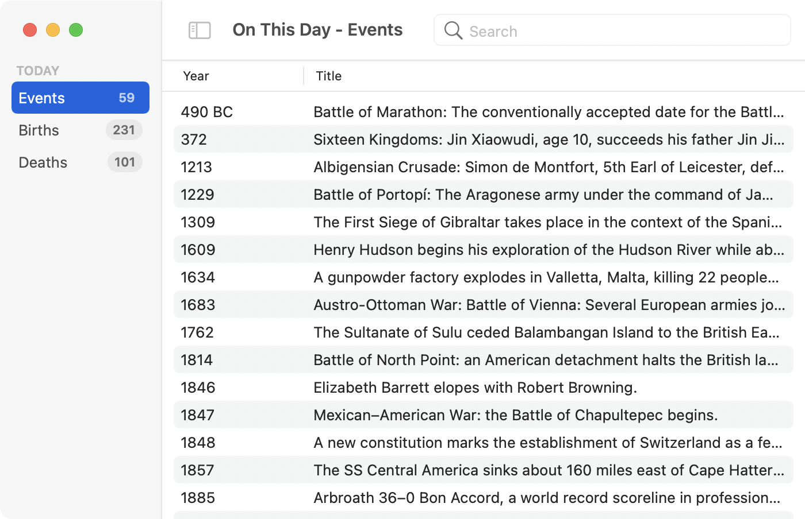
切换视图¶
在表格上还有更多的工作要做，但是，现在你已经证明了它的作用，你要在工具栏上添加一个新的控件。这将使你能够在网格和表格之间进行切换。
首先，在ContentView.swift中添加这个枚举，在ContentView之外：
enum ViewMode: Int {
case grid
case table
}
这就定义了两种可能的视图模式。接下来你需要一个属性来保持当前的设置，所以在ContentView的顶部添加这一行：
@State private var viewMode: ViewMode = .grid
这将视图模式默认设置为grid，并给你一个可以传递给Toolbar的值。
在Controls/Toolbar.swift中，在结构中添加这个声明：
@Binding var viewMode: ViewMode
这个绑定允许Toolbar读取传递给它的值，并将任何变化送回给父视图。
你已经有一个ToolbarItem，所以在它后面添加这个新的：
// 1
ToolbarItem(id: "viewMode") {
// 2
Picker("View Mode", selection: $viewMode) {
// 3
Label("Grid", systemImage: "square.grid.3x2")
.tag(ViewMode.grid)
Label("Table", systemImage: "tablecells")
.tag(ViewMode.table)
}
// 4
.pickerStyle(.segmented)
// 5
.help("Switch between Grid and Table")
}
这就是你在这里所做的：
- 你创建了一个
ToolbarItem，有一个id属性用于自定义。默认情况下，placement是automatic，showByDefault是true，所以没有必要指定它们。 - 在
ToolbarItem中，你添加一个Picker，它有一个标题，其选择与viewMode属性绑定。 - 在
Picker中添加两个选项，每个选项都配置了一个使用文本的标签和一个SF符号。标签被设置为各自的枚举情况。 - 你将
pickerStyle设置为segmented。 - 你添加一个工具提示和可及性描述。
ContentView必须提供viewMode属性，所以回到Views/ContentView.swift，把对Toolbar的调用替换为：
Toolbar(viewMode: $viewMode)
现在只剩下一件事要做，那就是在显示中实现选择。
在NavigationView中，用这段代码替换TableView一行：
if viewMode == .table {
TableView(tableData: events)
} else {
GridView(gridData: events)
}
这将检查viewMode的设置并根据需要显示TableView或GridView。
建立并运行应用程序来测试你的新控件：
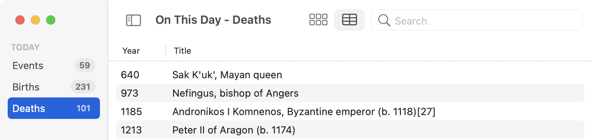
存储窗口设置¶
试试这个实验。运行该应用程序并打开第二个窗口。将一个窗口设置为在网格视图中显示Births。将另一个窗口设置为在表格视图中显示Deaths。在一个窗口中输入一些搜索文本。现在退出并重新启动应用程序。窗口重新出现在相同的位置，并具有以前的大小，但它们都在网格中显示Events，没有搜索文本。
Note
当你在打开多个窗口的情况下退出应用程序，然后从Xcode中再次运行它，有时只有一个窗口会出现在前面。点击Dock中的应用程序，使其所有的窗口进入视野。
在上一章中，你使用@AppStorage来保存整个应用程序的设置。这在这里不起作用，因为你想为每个窗口保存不同的设置。幸运的是，还有一个与@AppStorage几乎相同的属性包装器，但专门为这个需求设计。@SceneStorage是一个围绕UserDefaults的封装器，就像@AppStorage一样，但它为每个窗口保存设置。
还是在ContentView.swift中，将ContentView顶部的三个@State属性替换为这些：
@SceneStorage("eventType") var eventType: EventType?
@SceneStorage("searchText") var searchText = ""
@SceneStorage("viewMode") var viewMode: ViewMode = .grid
声明@SceneStorage属性的语法和你用于@AppStorage的语法一样，都是一个存储键和一个属性类型。对于searchText和viewMode，你可以设置一个默认值，但是eventType是一个可选项，你不能用一个默认值来初始化一个可选的@SceneStorage属性。
你确实想为eventType设置一个默认值，所以你要在视图出现时设置它。在NavigationView的searchable后面添加这个修改器：
.onAppear {
if eventType == nil {
eventType = .events
}
}
当视图出现时，onAppear动作会运行，并将eventType设置为events，如果它还没有被设置。
现在重复这个实验。你将不得不再次设置窗口，但在下次启动时，应用程序将恢复并应用你所有的窗口设置。打开一个新的窗口，它将使用所有的默认值，包括eventType的默认值。
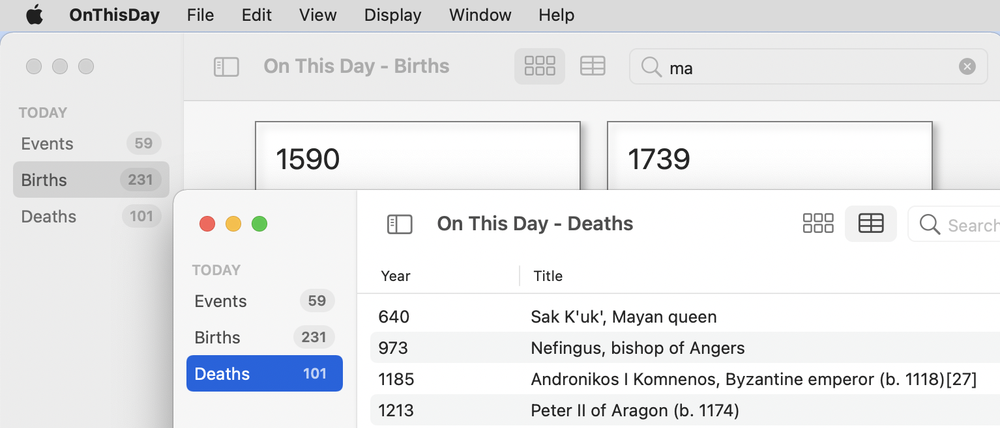
Note
如果应用程序没有恢复你的窗口设置，打开System Preferences ▸ General并取消Close windows when quitting an app的选择。
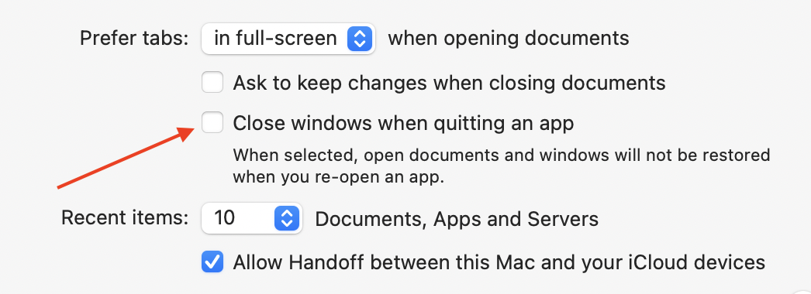
对表进行排序¶
现在，是时候回到表并实现排序了。为了给表添加排序，你需要创建一个排序描述符数组，并将该数组绑定到Table上。一个排序描述符是一个描述比较的对象，它使用一个键和一个方向--升序或降序。
首先，创建你的数组。在TableView.swift中，向结构中添加这个属性：
@State private var sortOrder = [KeyPathComparator(\Event.year)]
这将创建一个数组，其中有一个排序描述符，使用Event上的year属性的keyPath作为其默认的排序键。
接下来，你必须将这个排序描述符绑定到表上。把Table的初始化行改成这样：
Table(tableData, sortOrder: $sortOrder) {
这允许表存储最后选择的列的keyPath，以及它是升序排序还是降序排序。
要配置一个TableColumn进行排序，你必须给它一个value属性-keyPath作为这个列的排序键。将第一个TableColumn改为这样：
TableColumn("Year", value: \.year) {
Text($0.year)
}
这并没有什么不妥，但苹果公司的工程师意识到，大多数列的值keyPath和表格单元格的文本内容会使用同一个属性，所以他们建立了一个快捷方式。
把第二个TableColumn {...}替换成这样：
TableColumn("Title", value: \.text)
在这里，你没有指定任何单元格内容，所以keyPath指示的属性会自动用于Text视图中。如果要显示其他东西，如复选框或按钮，或以不同的方式设计文本，你就必须使用较长的格式。为了显示标准文本，这是一个非常方便的功能。
现在你已经有了排序接口和存储设置，但这并没有进行实际的排序。给TableView添加这个计算属性：
var sortedTableData: [Event] {
return tableData.sorted(using: sortOrder)
}
这需要由ContentView提供的tableData，并使用排序描述符进行排序。每当你点击一列标题，排序描述符就会改变。当你再次点击同一标题时，排序键保持不变，但排序方向改变。
为了让表格使用排序后的数据，请将Table初始化行改为这样：
Table(sortedTableData, sortOrder: $sortOrder) {
现在建立并运行应用程序，切换到表视图并点击标题。注意粗体的标题文本和一列标题右边的圆点，显示它是主动排序的一列，并指示排序方向：
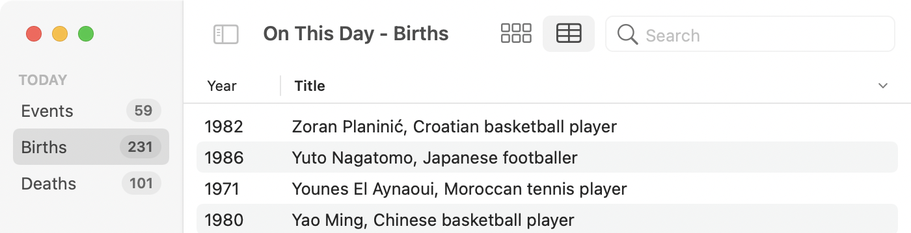
选择事件¶
你的表格看起来不错，它以更紧凑的形式显示数据，但它没有显示每个事件的链接，如果有很多文字，它也没有显示完整的标题。所以现在你要添加在表中选择行的功能。然后，你将重新使用EventView来在边上显示所选的事件。
使表格可选择的过程与使其可排序类似。你创建一个属性来记录被选中的行，然后将其绑定到表格上。
在TableView.swift中，添加这个属性：
@State private var selectedEventID: UUID?
每个Event都有一个id属性，是一个UID。表格使用这个UUID来识别每一行，所以记录选择的属性也必须是一个UUID。因为可能没有选中的行，所以selectedEventID是一个可选项。
然后，再次将表的声明行（这将是最后一次）替换成这样：
Table(
sortedTableData,
selection: $selectedEventID,
sortOrder: $sortOrder) {
这里的新参数是selection，你将其绑定到新的selectedEventID属性。
现在建立并运行，你可以点击任何一行来突出显示它：
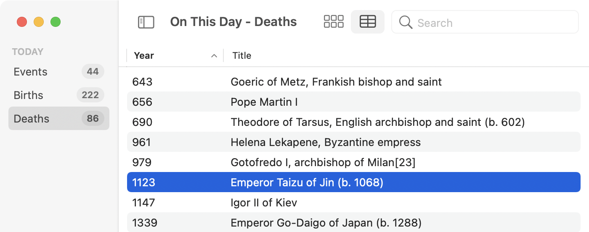
选择多行¶
你一次只能选择一个行。按Shift键或按Command键会取消对当前行的选择，并选择新的一行。这对这个应用程序来说是完美的，但你可能有其他的应用程序需要选择多行，所以这里是你如何设置的。
把selectedEventID属性替换成这样：
@State private var selectedEventID: Set<UUID> = []
现在你要存储的不是一个单一的事件ID，而是一个Set的ID。现在建立并运行，并测试多重选择：
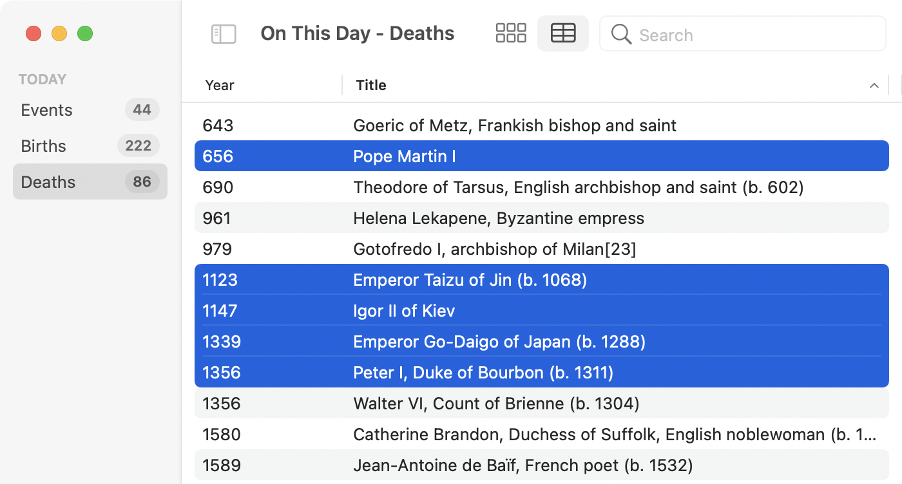
注意该表是如何通过排序和搜索保持选择的。
现在你知道了如何为多个选择设置一个表格，把它设置成使用单一选择的方式：
@State private var selectedEventID: UUID?
显示完整的事件数据¶
点击表格中的一行会设置selectedEventID，这是一个UID，但是，要显示EventView，你需要一个Event。为了找到与所选UID相匹配的Event，在TableView中添加这个计算属性：
var selectedEvent: Event? {
// 1
guard let selectedEventID = selectedEventID else {
return nil
}
// 2
let event = tableData.first {
$0.id == selectedEventID
}
// 3
return event
}
这个属性是做什么的？
- 它检查是否有
selectedEventID，如果没有，返回nil。 - 它使用
first(where:)来查找tableData中第一个具有匹配ID的事件。 - 然后，它返回事件，如果没有该
ID的事件，则返回nil。
有了这个属性，你可以添加用户界面，不要忘了允许在没有选定行的情况下使用。
仍然在TableView.swift中，Command-click Table并选择Embed in HStack。在Table之后，就在HStack的结束括号之前，添加这个条件代码：
// 1
if let selectedEvent = selectedEvent {
// 2
EventView(event: selectedEvent)
// 3
.frame(width: 250)
} else {
// 4
Text("Select an event for more details…")
.font(.title3)
.padding()
.frame(width: 250)
}
这段代码在做什么？
- 检查是否有一个事件要显示。
- 如果有，使用
EventView来显示它。 - 设置一个固定的宽度，这样当你选择不同的事件和不同的文本量时，显示就不会跳动。
- 如果没有事件，就用同样的固定宽度显示一些文字。
建立并运行应用程序，确保你在表格视图中，然后点击任何事件：
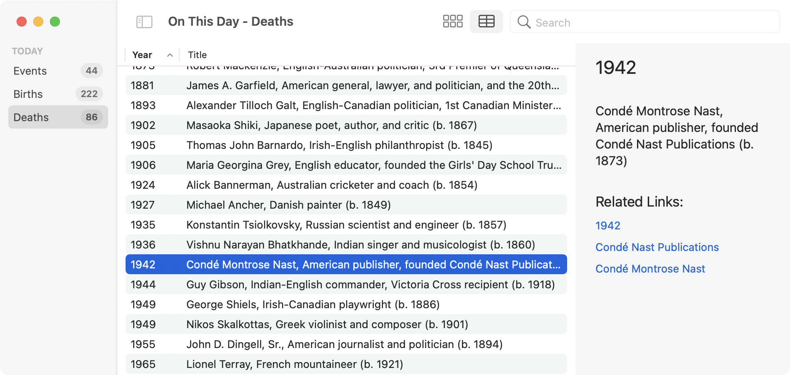
你用于网格的EventView显示了所有关于选定事件的信息，包括活动链接和悬停指针。现在你可以看到为什么网格的一些样式是在GridView而不是在EventView。你不希望在这个视图中出现边框或阴影。
Note
有时你可以在视图上点击命令，但看不到所有预期的选项，比如Embed in HStack。在这种情况下，打开画布预览。它不一定是活动的，但它必须打开以显示所有的选项。
自定义视图¶
到目前为止，在这个应用程序中，每个视图都是一个标准视图。这几乎是最好的方式--除非你在写一个游戏--因为它使你的应用程序看起来很熟悉。这使得它易于学习，易于使用。它还能使你的应用程序面向未来。如果苹果改变了系统字体或改变了标准按钮的外观和感觉，你的应用程序将采用新的外观，因为它使用标准字体和UI元素。
但是，总有一些情况下，标准的用户界面视图并不能完全满足你的要求...
你要添加到应用程序的下一个功能是选择不同日期的能力。显示今天的著名事件很有趣，但你难道不想知道有多少其他著名的人在你的生日那天出生吗？
看一看日期选择器¶
当你考虑日期选择时，你的第一直觉应该是去找一个DatePicker。
要测试这个，打开下载的assets文件夹，把DatePickerViews.swift拖到你的项目中。打开该文件并恢复预览。点击Live Preview，然后点击Bring Forward，尝试选择一些日期：
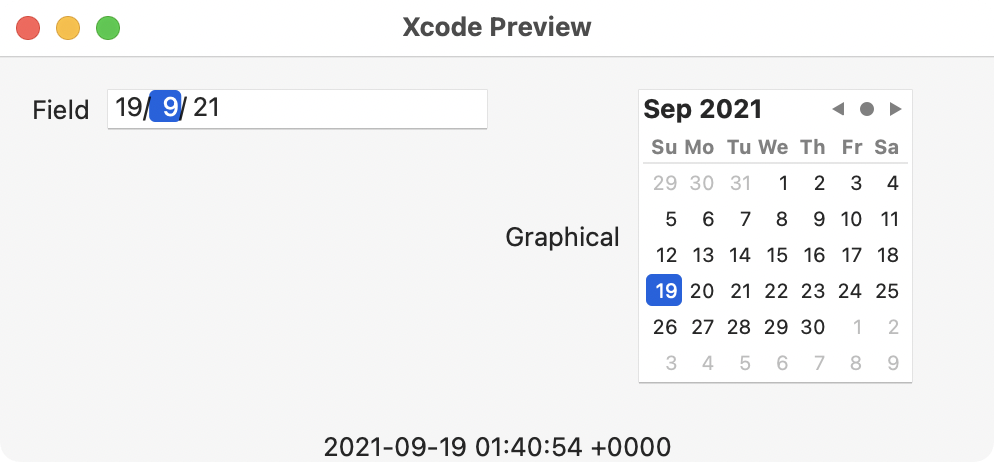
这显示了macOS日期选择器的两种主要风格。对于field样式有一些变化，但这基本上是它。你可以很容易地选择一个日期，但你能看出为什么这对这个应用程序来说不是很好吗？试着选择2月29日。
所以这里的问题是，没有办法从选择中取出年份，而这个应用程序只需要月和日。而日期必须包括每个月的每一个可能的日子，不管是闰年。所以现在是时候创建一个自定义视图了。
创建一个自定义日期选择器¶
从你的项目中删除DatePickerViews.swift。它只是作为一个示范。
在Views组中创建一个新的SwiftUI View文件，并将其称为DayPicker.swift。
这个视图将有两个Picker视图：一个用于选择月份，另一个用于选择日期。
给DayPicker添加这些属性：
// 1
@EnvironmentObject var appState: AppState
// 2
@State private var month = "January"
@State private var day = 1
它们是用来做什么的？
- 当你选择一个
Day，appState将加载该日的事件。它还提供了一个月份名称的列表。 - 每个
Picker都需要一个属性来保存选择的值。
你可能想知道为什么month使用January而不是向Calendar询问本地化的月份名称。这是为了适应API，它在date属性中使用英文月名。你要忽略系统语言，使用英文的月份名称。
当用户选择一个月份时，日期Picker应该显示正确的可用天数。由于你不关心闰年，你可以通过向DayPicker添加这个计算属性来手动得出：
var maxDays: Int {
switch month {
case "February":
return 29
case "April", "June", "September", "November":
return 30
default:
return 31
}
}
这将检查所选的月份并返回该月的最大天数。
设置用户界面¶
现在你有了所需的属性，用这个替换默认的Text：
// 1
VStack {
Text("Select a Date")
// 2
HStack {
// 3
Picker("", selection: $month) {
// 4
ForEach(appState.englishMonthNames, id: \.self) {
Text($0)
}
}
// 5
.pickerStyle(.menu)
// 6
Picker("", selection: $day) {
ForEach(1 ... maxDays, id: \.self) {
Text("\($0)")
}
}
.pickerStyle(.menu)
// 7
.frame(maxWidth: 60)
.padding(.trailing, 10)
}
// button goes here
}
// 8
.padding()
这是标准的SwiftUI，没有任何MacOS特有的东西，但它是做什么的呢？
- 从一个
VStack开始，在两个选取器之前显示一个标题。 - 使用
HStack来并排显示挑选器。 - 设置一个与
month属性绑定的Picker。 - 循环使用
appState提供的英文月份名称，以创建挑选器项目。 - 设置拾取器的样式为
menu，所以它显示为一个弹出式菜单。 - 使用
maxDays的计算属性，对日期选择器做同样的处理。 - 为日期选择器设置一个小的宽度，并将其从尾部边缘移开。
- 在
VStack周围添加一些填充。
现在恢复预览，它将会失败，因为你已经声明了一个@EnvironmentObject，但没有向预览提供它。
在previews中，给DayPicker()添加以下修改器：
.environmentObject(AppState())
.frame(width: 200)
这提供了必要的环境对象，并设置了一个狭窄的宽度，当你把这个视图添加到侧边栏时，它将是合适的。
Note
这在每次预览刷新时调用API，所以不要经常预览这个文件。
打开Live Preview并点击Bring Forward，可以看到挑选器的操作，包括设置最大天数：
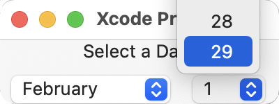
你的自定义日期选择器的最后一个组件是一个请求新数据的方法和一个触发它的按钮。
首先添加方法，把这个插入到DayPicker中：
// 1
func getNewEvents() async {
// 2
let monthIndex = appState.englishMonthNames
.firstIndex(of: month) ?? 0
// 3
let monthNumber = monthIndex + 1
// 4
await appState.getDataFor(month: monthNumber, day: day)
}
这种方法的作用是什么？
- 它使用
await调用一个async方法，所以必须是async本身。 - 获取所选月份的索引号，使用
0作为默认值。 - 在基于零的月份索引上加一，得到月份编号。
- 调用
appState.getDataFor()来查询所选日期的API。
现在，对于一个Button使用这个方法；在// button goes here的位置添加这个：
if appState.isLoading {
// 1
ProgressView()
.frame(height: 28)
} else {
// 2
Button("Get Events") {
// 3
Task {
await getNewEvents()
}
}
// 4
.buttonStyle(.borderedProminent)
.controlSize(.large)
}
好的，所以它不仅仅是一个按钮!
- 如果
appState已经从API加载，显示一个ProgressView而不是一个按钮。标准的ProgressView是一个旋转器。为了阻止这个视图在垂直方向上调整大小，它被设置为与按钮的高度相同。 - 如果
appState没有加载，显示一个有标题的Button。 - 按钮的动作是一个异步的
Task，调用你刚才添加的方法。 - 为
Button设计风格，使其看起来big而important。:］
现在是时候把这个自定义视图放到位了。
添加到侧边栏¶
你创建了一个自定义的日期选择器视图，但你是通过组合标准的视图来建立它的，所以尽管它不是通常的选择日期的界面，但这些组件都是熟悉的。现在，你将显示你的新的DayPicker并让它开始工作，下载新的数据。
打开SidebarView.swift，然后Command-click List并选择Embed in VStack。
在设置listStyle的那一行下面，添加：
Spacer()
DayPicker()
这段代码将你的新视图插入到侧边栏，用Spacer将其推到窗口的底部。
现在构建并运行以看到新的选取器。当应用程序启动时，你会看到旋转器加载今天的事件，然后你会看到这个按钮：
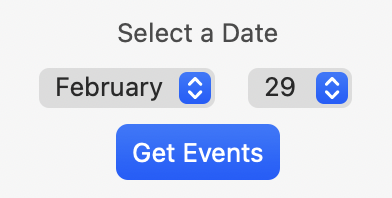
选择一个月份和一天，然后点击按钮。一个进度旋转器旋转了几秒钟，然后按钮重新出现，但显示的其他部分没有变化。
另外，你可以看到侧边栏的最小宽度太窄了，至少对于名字较长的月份是这样。
在SidebarView.swift中，在VStack中加入这个修改器：
.frame(minWidth: 220)
现在要使Get Events按钮工作...
使用选定的日期¶
在ContentView.swift中，你一直从appState中获取数据而没有提供日期。这使得appState使用今天的日期，到目前为止，这很好。现在你想使用在DayPicker中选择的日期，如果有的话。而且这个设置需要针对窗口，而不是整个应用程序。
从ContentView.swift开始，将这个属性添加到其他@SceneStorage属性中：
@SceneStorage("selectedDate") var selectedDate: String?
接下来，把events的计算属性改为这样：
var events: [Event] {
appState.dataFor(
eventType: eventType,
date: selectedDate,
searchText: searchText)
}
你为appState.dataFor()提供了所有可选参数，允许eventType、searchText，现在还有date。
最后，你需要将DayPicker中选择的日期与这个@SceneStorage属性联系起来。
打开DayPicker.swift，在顶部添加@SceneStorage属性声明：
@SceneStorage("selectedDate") var selectedDate: String?
向下滚动到getNewEvents()并在该方法的末尾添加这一行：
selectedDate = "\(month) \(day)"
这将在新数据下载后设置@SceneStorage属性。
现在建立并运行，选择一个不同的日期，点击Get Events，这一次，你会看到数据的变化：
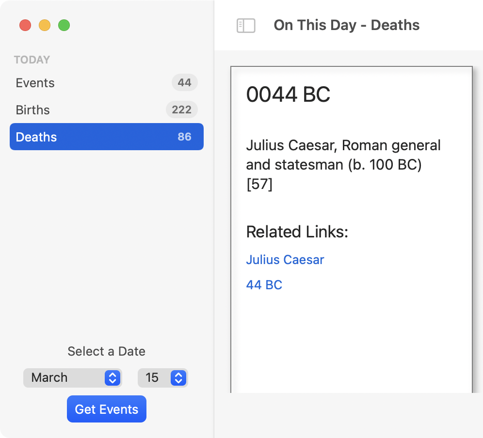
列出已下载的日期¶
现在你知道你的自定义日期选择器正在工作，新的事件正在下载。但是，你没有任何办法在下载的数据集之间进行交换。是时候进一步扩展侧边栏了...
在SidebarView.swift中，你有一个List视图和一个Section。
在这个Section之后，但仍在List内，添加以下代码：
// 1
Section("AVAILABLE DATES") {
// 2
ForEach(appState.sortedDates, id: \.self) { date in
// 3
Button {
selectedDate = date
} label: {
// 4
HStack {
Text(date)
Spacer()
}
}
// 5
.controlSize(.large)
}
}
这一切是在做什么？
- 添加一个新的
Section，并加上一个标题。 - 循环浏览
appState的事件日期。在appState中，有一个计算属性，返回按月和日排序的日期，而不是按字母顺序。 - 为每个日期显示一个
Button，设置@SceneStorage属性。 - 在每个按钮里面，显示日期，通过一个
Spacer推到左边。 - 将
controlSize设置为大，这使得按钮的大小与侧边栏顶部的列表中的条目相似。
为了摆脱由此引起的错误，在顶部添加selectedDate属性：
@SceneStorage("selectedDate") var selectedDate: String?
现在构建并运行该应用程序。当它启动时，应用程序会下载今天的日期以及应用程序关闭时正在使用的任何日期的事件。这些日期以升序显示在新的部分。
使用DayPicker选择一个新的日期，然后点击Get Events。一旦新的事件被下载，新的日期就会出现在这第二部分。点击任何一个按钮，在不同的日期之间进行交换。
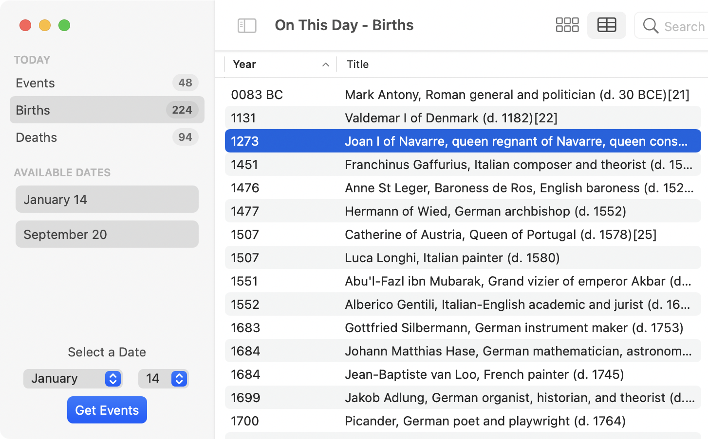
这一切都工作得很好，但按钮不显示哪个是选定的日期。添加一些条件样式可以解决这个问题。但是有一个问题：你不能在if语句中包裹一个修改器。通常情况下，你会使用三元运算符在两种样式之间切换，但由于某些原因，这对ButtonStyle不起作用。所以你要使用一个ViewModifier。
在SidebarView.swift的末尾，在任何结构之外，添加这个：
// 1
struct DateButtonViewModifier: ViewModifier {
// 2
var selected: Bool
// 3
func body(content: Content) -> some View {
if selected {
// 4
content
// 5
.buttonStyle(.borderedProminent)
} else {
// 6
content
}
}
}
如果你以前没有使用过ViewModifier，下面是这段代码的作用：
- 创建一个符合
ViewModifier的新结构。 - 声明一个单一的属性，表明这是否是一个选中的按钮。
- 定义
ViewModifier所要求的body方法。它的content参数是原始的未修改的（按钮）View。 - 如果
selected为true，则对content应用一个修改器。 - 将按钮的样式设置为
borderedProminent。这将导致SwiftUI用重点颜色来填充按钮。 - 如果这不是一个选定的按钮，则返回未修改的
content，保持样式不变。
有了这个ViewModifier，在AVAILABLE DATES部分的Button上添加这个修改器，在controlSize修改器之后应用它：
.modifier(DateButtonViewModifier(selected: date == selectedDate))
这将应用视图修改器，将行的日期与窗口的选定日期进行比较的结果传递给它。
现在构建并运行，看看所有这些都是怎么回事：
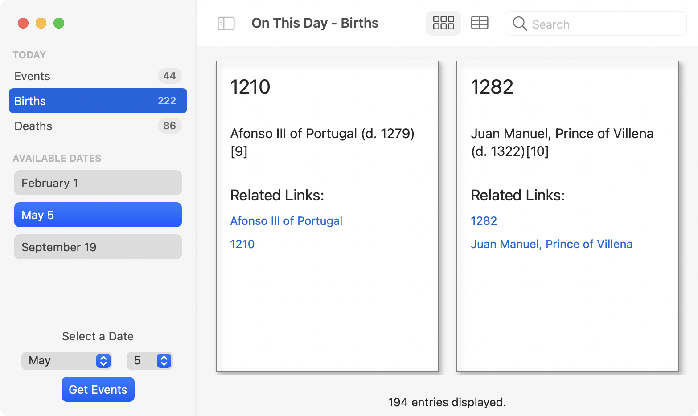
你可能希望使用一个自定义的ButtonStyle而不是ViewModifier来调整按钮。这也是可行的，但是自定义的ButtonStyle需要你定义用户按压或释放按钮时的不同外观。在这种情况下，使用ViewModifier来应用标准的ButtonStyle更简单，它可以保持预定义的按下的样式。
更新顶部部分¶
到目前为止，一切看起来都很好，但该应用程序有一个缺陷。当你选择一个日期时，侧边栏的顶部仍然显示TODAY，而徽章显示的是今天的事件计数。点击顶部部分的事件类型，会显示所选日期的正确事件，但标题和徽章的数量不匹配。
打开SidebarView.swift，将第一行Section改为：
Section(selectedDate?.uppercased() ?? "TODAY") {
这将寻找一个selectedDate，如果有的话，将其转换为大写字母，并将其作为章节的标题。对于一个新窗口，selectedDate将是nil，所以标题将使用TODAY，就像以前一样。
这就解决了标题的问题；现在是徽章计数的问题。在该Section的ForEach循环中，徽章计数是用appState.countFor()设置的。像appState.dataFor()一样，这个方法可以接受几个可选参数。到目前为止，你只使用了eventType，但现在你要添加date。
将appState.countFor()一行替换为：
? appState.countFor(eventType: type, date: selectedDate)
现在就建立并运行该应用程序，当你得到不同日期的事件时，部分标题和徽章数量会发生变化以匹配。打开一个新窗口。它显示TODAY作为部分标题，因为它没有选择日期。
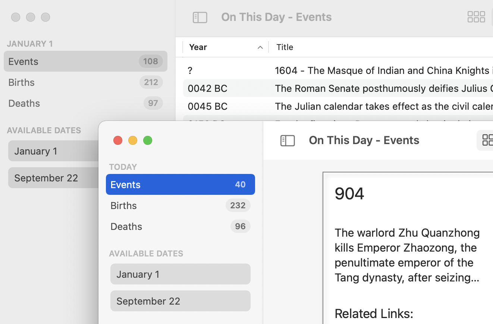
挑战¶
挑战1：表的样式¶
像许多SwiftUI视图一样，Table有自己的修改器。tableStyle。查阅相关文档，尝试一下你可以应用的不同样式。其中一些还允许你关闭交替的行背景颜色。
挑战2：在窗口标题中显示日期¶
在第2章中，你设置了一个windowTitle属性，将选定的事件类型显示为窗口标题。如果有选定的日期，就把它扩展到包括选定的日期，如果没有，就扩展到"Today"这个词。
挑战3：计算表格中的行数¶
在上一章的挑战中，你在GridView的底部添加了一个视图，以显示所显示事件的数量。给TableView添加一个类似的功能。不要忘记在showTotals被设置为false时将其隐藏。
如果你需要任何提示，请查看challenge文件夹中的TableView.swift和ContentView.swift。
关键点¶
- 对于以紧凑的形式显示大量数据，表格是一个很好的选择。
MacOS的SwiftUI现在提供了一个内置的Table视图。 - 虽然有些用户设置是全应用程序的，但其他设置只与自己的窗口有关。
- 你可以配置表格进行排序和搜索。它们可以被设置为允许单行或多行选择。
- 视图可以在你的应用程序的不同地方重复使用，通过在不同地方添加修改器，你可以调整视图以适应每个位置。
- 使用标准控件几乎总是最好的选择，但是，如果你的应用程序的需求不同，你可以通过将标准控件连接起来创建一个自定义控件。
接下来去哪？¶
伟大的工作! 这个应用程序现在看起来非常好，有很多功能，你可以尝试一下新的Table视图。你不得不使用一个自定义视图，而不是标准的DatePicker，但它仍然具有本地的外观和感觉。
在下一章，你将通过添加一些抛光功能来总结这个应用程序。
在2021年的WWDC上，苹果做了两个关于Mac应用程序的演讲。他们使用的样本应用程序有一个使用表格的优秀例子。下载project files，看看吧。